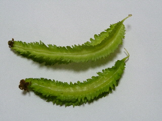
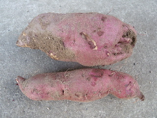
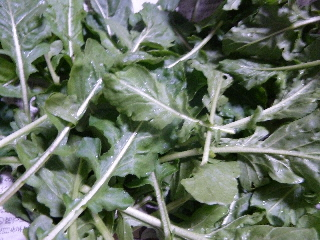
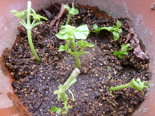
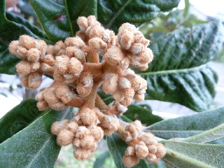
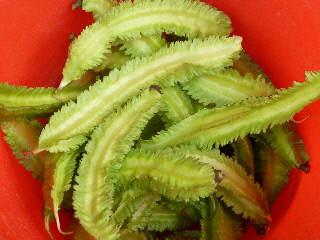

シカク豆を久々に収穫しました。
2012/09/01
久々にシカク豆が収獲できました。

あんまり出来なくて少し貴重な感じがしたので、味付けなしで茹でて、豆の味を味わってみました。
食べた感想「あんまり味ない」
んーん。人によって嗜好は違うんでしょうが、私は味がないのは嫌だな。
次からは味を付けて料理しようと思いました。
2012/09/01
久々にシカク豆が収獲できました。

あんまり出来なくて少し貴重な感じがしたので、味付けなしで茹でて、豆の味を味わってみました。
食べた感想「あんまり味ない」
んーん。人によって嗜好は違うんでしょうが、私は味がないのは嫌だな。
次からは味を付けて料理しようと思いました。
2012/09/08
綺麗な花ですね。

葉っぱは虫がいっぱいであんまり好きじゃないんですが、花が咲くといいですね。
2012/09/08
まだ早いかなとも思ったんですが、サツマイモを掘ってみたらありました。

いい大きさでした。
2012/09/16
春のルッコラはいつも沢山採れていたんですが、今年は秋のルッコラも豊作です。

これから沢山食べれそうです。
2012/09/17
もう秋でなので、もうすぐ季節が終わっちゃうんですが、スイートバジルを挿しました。

収穫には間に合わないかな？
普通にバジルは挿せば成長するんですが、葉っぱを採ったバジルでも成長するのかを試してみたかったので挑戦してみました。
育つといいな。
2012/09/22
今年はビワの花が沢山咲きました。

去年はちょっとしか咲かなくて、今年はビワが一つもできなかったので、来年こそは沢山ビワを実らして沢山食べたいです。
2012/09/22
いい季節になったのか？シカク豆が沢山採れました。

どうやって食べようかなー。
どうやったら美味しいんだろう？
過去の日記
畑仕事じゃないよ。